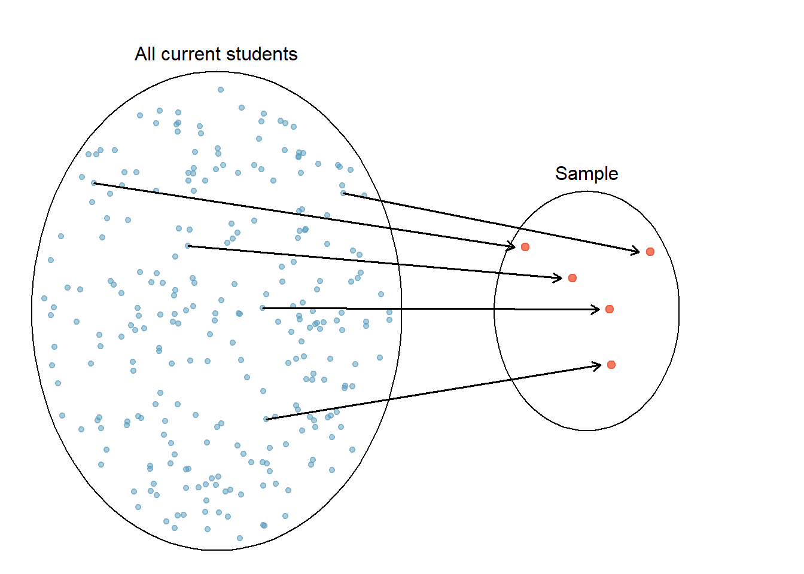

2 Data
2.1 Statistics is a Science of Data, so What is Data?
- Data: A set of objects on which we observe or measure one or more characteristics.
- Objects are individuals, observations, subjects or cases in statistical studies.
- A characteristic or attribute is called a variable because it varies from one to another.

- All right. Statistics is a Science of Data, so What is Data?
- Let’s define Data.
- A data set is a set of objects on which we observe or measure one or more characteristics.
- Objects are individuals, observations, subjects or cases in statistical studies.
- A characteristic or attribute is called a variable because it varies from one to another.
- For example, the data set right here is a set of Marquette basketball players.
- So objects are individuals or players in the data.
- And each player has several characteristics or attributes shown in columns associated with him.
- For example, his #, class, position, height, weight, hometown, and high school.
- These characteristics are called variables because they vary form one to another. Clear?
2.2 Data Matrix
- Each row corresponds to a unique case or observational unit.
- Each column represents a characteristic or variable.
- This structure allows new cases to be added as rows or new variables as new columns.
And we usually store a data set in a matrix form that has rows and columns.
Each row corresponds to a unique case or observational unit, or the object.
Each column represents a characteristic or variable.
This structure allows new cases to be added as rows or new variables as new columns.
The first step in conducting a study is to identify questions to be investigated.
A clear research question is helpful in identifying
- what cases should be studied (row)
- what variables are important (column)
Target Population: The complete collection of data we’d like to make inference about.
What is the average GPA of currently enrolled Marquette students?
- Target Population: The complete collection of data we’d like to make inference about.
- So the population is a set of all objects which we are interested in studying from.
- Because All Marquette undergrads that are currently enrolled is the complete collection of data we’d like to make inference about.
- Each currently enrolled Marquette undergrad is an object.
- Note that students who are not currently enrolled or students that are already graduated are not our interest, and they shouldn’t be a part of target population.
- Can anybody tell me what variable associated with Marquette undergrads is our interest?
- So average GPA is the variable or population property we like to make inference about.
2.3 Sample Data
- Sometimes, it’s possible to collect data of all cases we are interested.
- Most of the time, it is too expensive to collect data for every case in a population.
- What about the average GPA of all students in Illinois? the U.S.? the world? üò± üò± üò±

Sample: A subset of cases selected from a population.
Compute the average GPA of the sample data
Hope sample avg GPA \(\approx\) population avg GPA. üôè
So sampling is our solution to it.
A Sample is A subset of cases selected from a population.
And the idea is that OK, we are not able to compute the average GPA of a population, but we collect a sample from that population which has way less objects than the population.
And then we compute the average GPA of the sample data.
And we hope the sample average GPA can be close to the population average GPA because the population GPA is our main interest, not the sample GPA.
To have sample average GPA close to population GPA, we want the sample to look like the population so that the sample and the population share similar attribute including GPA.
2.4 Good Sample vs. Bad Sample
Is this 4740/5740 class a sample data of the target population Marquette students?
Is this 4740/5740 class a “good” sample of the target population?
Does this 4740 class look like the target population?
The sample is convenient to be collected, but it is NOT representative of the population.
Biased sample: The average GPA of the class may be far from that of all MU undergrads.

- The sample is convenient to be collected, but it is NOT representative of the population.
- You are mostly STEM majors, and so with a high chance, your avg GPA is not the same as the GPA of humanities or business students,right.
- Biased sample: The average GPA of you guys may not be close to the average GPA of all Marquette undergrads.
- Sample data must be collected in an appropriate way. If not GIGO.

2.5 How and Why a Representative Sample?
- We always seek to randomly select a sample from a population.
- Lots of statistical methods are based on randomness assumption.
- We always seek to randomly select a sample from a population because random sampling usually give us a Representative Sample, as long as the sample size, or the number of objects in the sample is not too small.
- If data are not collected in a random framework, these statistical methods – the estimates and errors associated with the estimates – are not reliable.
2.6 Data Collection
- Observational Study: Observe and measure characteristics/variables, and do NOT attempt to modify or intervene with the subjects being studied.
- Sample from 1️⃣ the heart disease and 2️⃣ heart disease-free populations. Then record the fat content of the diets for the two groups.
- Experimental Study: Apply some treatment(s) and then proceed to observe its responses or effects on the individuals (experimental units).
- Assign volunteers to one of several diets with different levels of dietary fat (treatments). Then compare the treatments with respect to the incidence of hear disease after a period of time.
Observational or Experimental? - Randomly select 40 males and 40 females to test the difference in blood pressure levels between male and female. - Test the effects of a new drug by randomly dividing patients into 3 groups (high dosage, low dosage, placebo).
- Confounder: A variable NOT included in a study but affects the variables in the study.
- Observe past data show that increases in ice cream sales are associated with increases in drownings, and we conclude that ice cream causes drownings. üò± üòï ‚ÅâÔ∏è
What is the confounder that is not in the data, but affects ice cream sales and the number of drownings?
Temperature: as temperature increases, ice cream sales increase and the number of drownings goes up because more people swim.
As temperature increases (season), ice cream sales increase and the number of drownings goes up because more people swim.
2.7 Causal Relationship
- Making causal conclusions based on experiments is often more reasonable than making the same causal conclusions based on observational data.
- Observational studies are generally only sufficient to show associations, not causality.

2.8 Simple Random Sample
- Random Sample: Each member of a population is equally likely to be selected.
- Simple Random Sample (SRS): Every possible sample of sample size \(n\) has the same chance to be chosen.
- Example: If sample 100 students from all, say 10,000 Marquette students, I would randomly assign each student a number (from 1 to 10,000), then randomly select 100 numbers.


2.9 Stratified Random Sample
- Stratified Sampling: Subdivide the population into different subgroups (strata) that share the same characteristics, then draw a simple random sample from each subgroup.
- Homogeneous within strata; Non-homogeneous between strata

homogeneous in terms of same characteristics of the subgroups. For example, same college.
Analyzing data from a stratified sample is a more complex task.
Example: Divide Marquette students into groups by colleges, then SRS for each group.

2.10 Cluster Sampling
- Cluster Sampling: Divide the population into sections (clusters), then randomly select some of those clusters, and then choose all the members from those selected clusters.
- Homogeneous between clusters; Non-homogeneous within clusters

- Example: Conducting a study of STEM student drinking habit by randomly selecting 10 different STEM classes and interviewing all of the students in each of those classes.

clusters look similar each other, but members in a cluster are not very alike. They have different characteristics.
Homogeneous between clusters because all classes are STEM classes.
Non-homogeneous within clusters because students in the same class may have different majors or from different colleges
OK. We learn data collection and sampling methods.
Now’s let’s learn some data types.

2.11 Categorical vs. Numerical Variables
A categorical (qualitative) variable provides non-numerical information which can be placed in one (and only one) category from two or more categories.
Gender (Male üë®, Female üë©, Other üè≥Ô∏è‚Äçüåà)
Class (Freshman, Sophomore, Junior, Senior, Graduate)
Country (USA üá∫üá∏, Canada üá®üá¶, UK üá¨üáß, Germany üá©üá™, Japan üáØüáµ, Korea üá∞üá∑)
A numerical (quantitative) variable is recorded in a numerical value representing counts or measurements.
- GPA
- The number of relationships you’ve had
- Height
2.12 Numerical Variables can be Discrete or Continuous
- A discrete variable takes on values of a finite or countable number.
- A continuous variable takes on values anywhere over a particular range without gaps or jumps.
- GPA is continuous because it can be any value between 0 and 4.
- The number of relationships you’ve had is discrete because you can count the number and it is finite.
- Height is continuous because it can be any number within a range.
2.13 Categorical Variables are Usually Recorded as Numbers
Gender (Male = 0, Female = 1, Others = 2)
Class (Freshman = 1, Sophomore = 2, Junior = 3, Senior = 4, Graduate = 5)
Country (USA = 100, Canada = 101, UK = 200, Germany = 201, Japan = 300, Korea = 301)
United Airlines boarding groups
The numbers represent categories only; differences between them are meaningless.
- Canada - USA = 101 - 100 = 1?
- Graduate - Sophomore = 5 - 2 = 3 = Junior?
We need to learn the level of measurements to know whether or which arithmetic operations are meaningful.
2.14 Levels of Measurements: Nominal and Ordinal for Categorical Variables
- Nominal: The data can NOT be ordered in a meaningful or natural way.
- Gender (Male = 0, Female = 1, Others = 2) is nominal because Male, Female and Other cannot be ordered.
- Country (USA = 100, Canada = 101, UK = 200, Germany = 201, Japan = 300, Korea = 301) is nominal.
- Ordinal: The data can be arranged in some meaningful order, but differences between data values can NOT be determined or are meaningless.
- Class (Freshman = 1, Sophomore = 2, Junior = 3, Senior = 4, Graduate = 5) is ordinal because Sophomore is one class higher than Freshman.
- Interval: The data have meaningful difference between any two values. But the data do NOT have a natural zero or starting point. The data can do \(\color{red} +\) and \(\color{red} -\), but can’t reasonably do \(\color{red} \times\) and \(\color{red} \div\).
- Temperature is interval because \(80^{\circ}\)F is 40 degrees higher than \(40^{\circ}\)F \((80-40=40)\), but \(0^{\circ}\) does not mean NO heat and \(80^{\circ}\)F is NOT twice as hot as \(40^{\circ}\)F.
- Ratio: The data have both meaningful differences and ratios, and there is a natural zero starting point that indicates none of the quantity. The data can do \(\color{red} +\), \(\color{red} -\), \(\color{red} \times\) and \(\color{red} \div\).
- Distance is ratio because \(80\) miles is twice as far as \(40\) miles \((80/40 = 2)\), and \(0\) mile means no distance.
2.15 Converting Numerical to Categorical
Attaching package: 'kableExtra'The following object is masked from 'package:dplyr':
group_rows| Grade | Percentage |
|---|---|
| A | [94, 100] |
| A- | [90, 94) |
| B+ | [87, 90) |
| B | [83, 87) |
| B- | [80, 83) |
| C+ | [77, 80) |
| C | [73, 77) |
| C- | [70, 73) |
| D+ | [65, 70) |
| D | [60, 65) |
| F | [0, 60) |
Identify data type of each variable in the Marquette men’s basketball player data